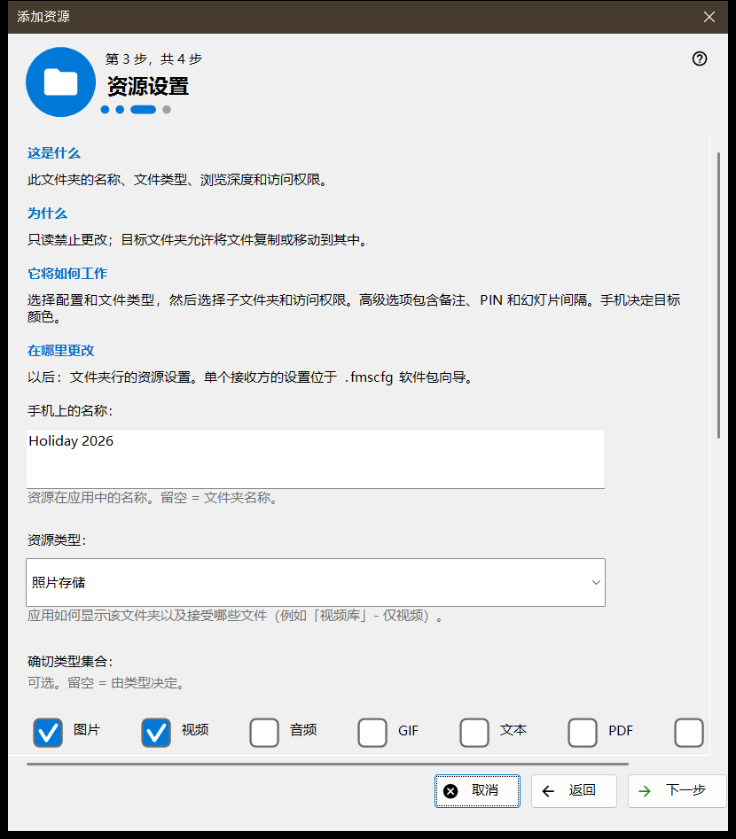
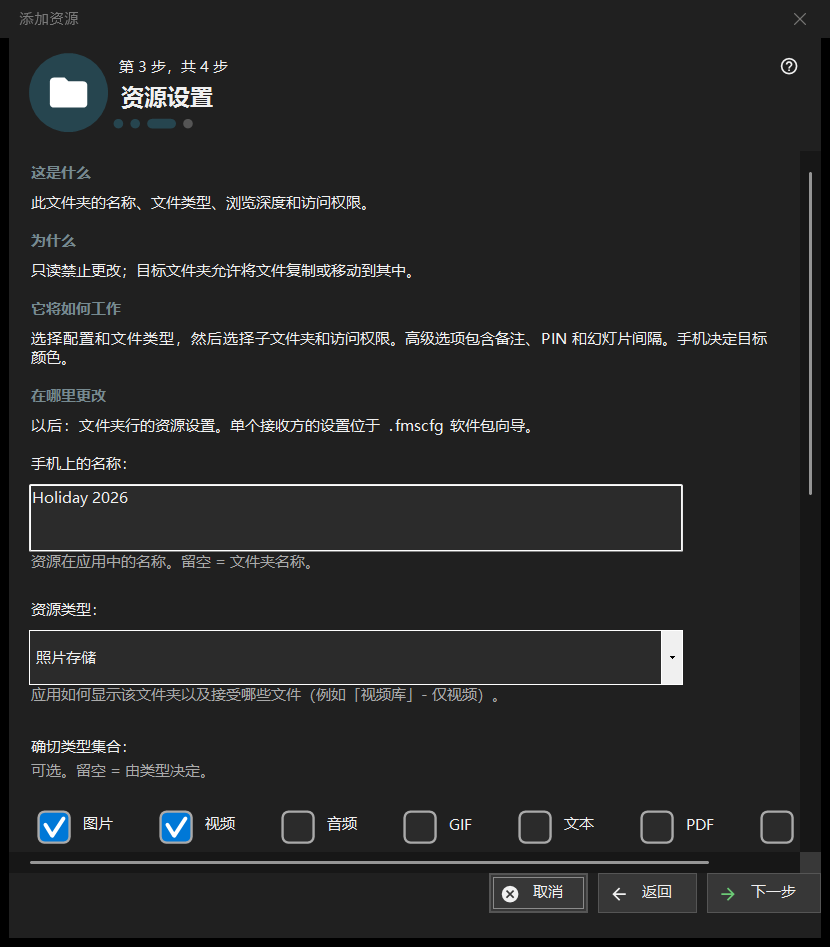

添加资源
用途说明
一个简短的向导，用来添加一个共享资源：一个文件夹，或一个已打开的 FileDO 磁盘。它从「添加」菜单的「添加资源向导..」项和首次运行流程中打开，最后把资源添加到共享列表中。


操作顺序
- 阅读什么是资源，点击「下一步」。
- 点击「选择文件夹..」并选取文件夹。
- 在「资源设置」页设置名称、类型和访问权限。
- 查看摘要，点击「完成」。
- 用最后一页的按钮显示二维码或打开设置。
界面元素
什么是资源
资源是一个文件夹或一个已打开的 FileDO 虚拟磁盘，查看器通过这台电脑访问它。文件仍保留在电脑上；手机通过连接浏览并复制它们，列表中勾选的文件夹才会被提供。
选择文件夹
「选择文件夹..」打开常用的文件夹选择框，「FileDO 磁盘..」列出已打开的磁盘。已在列表中的文件夹会被拒绝，并提示「该文件夹已在列表中。」。请选择已经打开的 FileDO 磁盘；向导不会创建或挂载它们。
资源设置
手机上的名称、类型、确切的媒体集合、扫描条件和访问权限。只读会禁止更改；目标文件夹允许向其中复制和移动文件。「高级选项」包含备注、PIN 和幻灯片间隔。目标的颜色由手机选择。
资源和后续操作
「完成」保存设置并添加资源；在此之前取消不会改变任何内容。最后一页说明资源是否正在被提供。如果服务器已关闭，手机暂时看不到它；如果未能确认已提供，请检查设置。「显示 QR 码」打开访问码，「设置..」打开管理器设置，「关闭」离开向导。